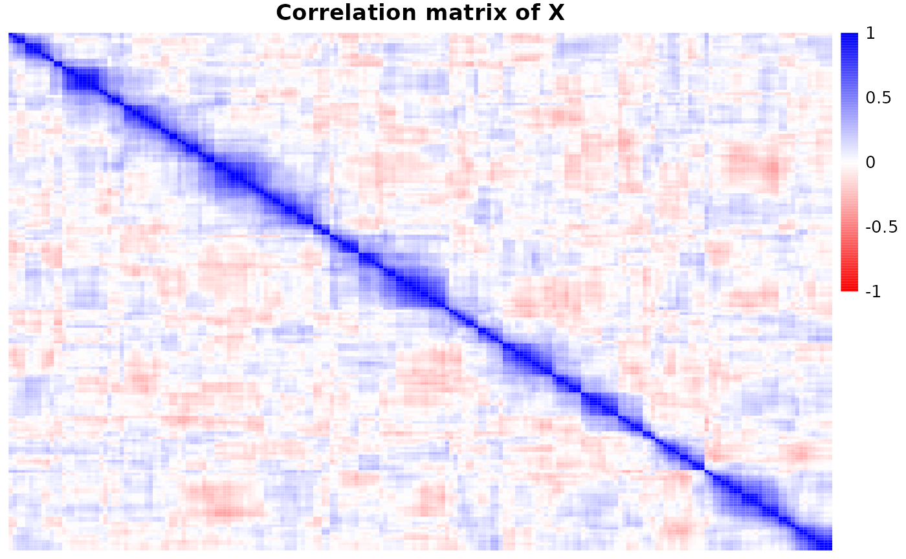

BLiP for controlled variable selection
blipr-regression.RmdProblem setting
Suppose we observe highly correlated covariates \(X = (X_1, \dots, X_p)\) and a response \(Y\), and we seek to discover covariates \(X_j\) which are “important” in some sense while controlling the false discovery rate. High correlations make it challenging to detect individually important covariates, so resolution-adaptive variable selection aims to detect disjoint groups of variables such that each detected group contains at least one important variable with high confidence. Of course, BLiP will make each detected group as small as possible, so we will discover individual signal variables when possible.
Synthetic data
Below, we generate synthetic data of highly correlated covariates \(X = (X_1, \dots, X_p)\) and a response \(Y\), where \(Y \mid X \sim \mathcal{N}(X \beta, \sigma^2)\) follows a Gaussian linear model with sparse coefficients. We say that \(X_j\) is a signal variable if \(\beta_j \ne 0\).
library(blipr)
set.seed(123); n <- 100; p <- 200
data <- blipr::generate_regression_data(n=n, p=p)
# Show heatmap of correlation matrix
library(RColorBrewer)
colormap <-colorRampPalette(c("red","white","blue"))(100)
pheatmap::pheatmap(
cor(data$X),
breaks=c(0:100 - 50)/50,
color=colormap,
cluster_rows=F,
cluster_cols=F,
main='Correlation matrix of X'
)
Example 1: Linear spike-and-slab model + BLiP
We can run BLiP in two steps. First, we fit a Bayesian model to \((X, Y)\)—in this case, we use a spike-and-slab model for sparse linear regression. Second, we run BLiP directly on top of the posterior samples from the Bayesian model, as shown below.
# Step 1: fit a spike-and-slab model using NPrior. This takes ~30 seconds.
# devtools::install_github("rabbitinasubmarine/NPrior")
nprior <- NPrior::NPrior_run(
X=data$X, y=data$y, N=5000, prior='SpSL-G', verbose=0
)
post_samples <- t(nprior$ThetaSamples)Second, we apply BLiP to post_samples. Since this is a synthetic dataset, we can check whether the detections from BLiP are correct.
# Step 2: apply BLiP
detections <- blipr::BLiP(
samples=post_samples, error='fdr', q=0.1, max_pep=0.5
)Lastly, since this is a synthetic dataset, we can check whether the detections from BLiP are correct.
# Check whether detections are correct
check_correctness <- function(detections, beta) {
signals <- which(beta != 0)
for (j in 1:length(detections)) {
group <- detections[[j]]$group
pgroup <- paste("{", paste(group, collapse=", "), "}", sep='')
correct <- ifelse(
length(intersect(signals, group)) > 0,
"correctly",
"incorrectly"
)
cat("BLiP ", correct, " detected a signal in ", pgroup, ".\n", sep='')
}
}
check_correctness(detections, data$beta)
#> BLiP correctly detected a signal in {106}.
#> BLiP correctly detected a signal in {136}.
#> BLiP correctly detected a signal in {193, 194}.
#> BLiP correctly detected a signal in {95, 96, 97, 98, 99, 100}.
#> BLiP correctly detected a signal in {5}.
#> BLiP correctly detected a signal in {141}.
#> BLiP correctly detected a signal in {53, 54, 55, 56, 57}.Example 2: SuSiE + BLiP
BLiP can apply on top of nearly any Bayesian model or algorithm, including variational algorithms. Here, we show how to apply BLiP on top of a SuSiE model (Wang et al, 2020). We do this in three steps: Step 1 is to fit SuSiE, Step 2 is to create candidate groups based off of the SuSiE outputs, and Step 3 is to apply BLiP.
# Step 1: fit SuSiE
# install.packages("susieR")
susie_fit <- susieR::susie(X=data$X, y=data$y, L=10)
# Step 2: Create candidate groups
cand_groups <- blipr::susie_groups(
susie_fit$alpha, X=data$X, q=0.1
)
# Step 3: fit BLiP
detections <- blipr::BLiP(
cand_groups=cand_groups,q=0.1, error='fdr', max_pep=0.5
)As we can see from below, SuSiE + BLiP localizes signals more precisely than SuSiE alone.
cat("The signals are", which(data$beta != 0), "\n")
#> The signals are 5 14 20 54 98 106 136 141 164 193
cat("The SuSiE detections are: ")
#> The SuSiE detections are:
n <- lapply(
susie_fit$sets$cs,
function(x) {cat("{", paste(x, collapse=', '), "} ", sep='')}
)
#> {136} {106} {5, 6} {193, 194}
cat("\nThe SuSiE + BLiP detections are: ")
#>
#> The SuSiE + BLiP detections are:
n <- lapply(
detections,
function(x) {cat("{", paste(x$group, collapse=', '), "} ", sep='')}
)
#> {136} {106} {5} {193, 194}Example 3: Spike-and-slab probit regression
We can run BLiP on top of nearly any regression model, including various models for binary responses. For example, suppose we only observe a binary indicator \(Y^{\star}\) as an outcome. We can apply BLiP directly on top of a sparse probit model in this setting, as shown below.
# install.packages("BoomSpikeSlab")
# Generate probit data
set.seed(123)
pdata <- blipr::generate_regression_data(n=300, p=200)
# Step 1: fit probit model using 5 chains of 2000 samples
ystar <- pdata$y > 0
chains <- 10; niter <- 2000
post_samples <- matrix(0, 0, p)
for (c in 1:chains) {
probit_model <- BoomSpikeSlab::probit.spike(
ystar ~ pdata$X - 1, niter=niter, ping=-1, seed=123, expected.model.size=10
)
post_samples <- rbind(post_samples, probit_model$beta)
}
# Step 2: run BLiP on the posterior samples
detections <- blipr::BLiP(samples=post_samples, q=0.1, error='fdr')
check_correctness(detections, pdata$beta)
#> BLiP correctly detected a signal in {181}.
#> BLiP correctly detected a signal in {154, 155}.
#> BLiP correctly detected a signal in {109, 110}.
#> BLiP correctly detected a signal in {87}.
#> BLiP correctly detected a signal in {187}.
#> BLiP incorrectly detected a signal in {7, 8}.Discussion: Using hierarchical priors to avoid misspecification
BLiP can wrap on top of nearly any Bayesian model, and in practice, it is fairly robust to some degree of model misspecification (see the paper for simulations and a discussion of this issue). That said, if the underlying model is extremely poorly specified, BLiP will violate FDR control. For example, in the following problem, the prior indicates that \(50\%\) of the variables are signal variables, whereas in truth only \(5\%\) of the variables are signal variables.
# Sample from an obviously bad spike and slab model
lm_bad <- BoomSpikeSlab::lm.spike(
data$y ~ data$X - 1, niter=2000, ping=-1, expected.model.size=100,
)
detections_bad <- blipr::BLiP(samples=lm_bad$beta, q=0.1, error='fdr')
check_correctness(detections_bad, data$beta)
#> BLiP correctly detected a signal in {106}.
#> BLiP correctly detected a signal in {136}.
#> BLiP correctly detected a signal in {5, 6}.
#> BLiP correctly detected a signal in {95, 96, 97, 98, 99, 100}.
#> BLiP correctly detected a signal in {53, 54, 55, 56}.
#> BLiP correctly detected a signal in {8, 9, 10, 11, 12, 13, 14, 15, 16, 17, 18, 19, 20, 21, 22, 23, 24, 25, 26, 27, 28}.
#> BLiP incorrectly detected a signal in {60, 140}.
#> BLiP incorrectly detected a signal in {111}.
#> BLiP incorrectly detected a signal in {4, 78}.
#> BLiP correctly detected a signal in {193, 194}.
#> BLiP correctly detected a signal in {141, 190}.As we can see, many of these detections are false positives due to the misspecified model. To avoid this situation, we recommend using hierarchical priors on unknown nuisance parameters like the sparsity level in regression problems with a conservative choice of hyperparameters. See Spector and Janson (2022) for more discussion of this issue and a concrete suggestion for hierarchical priors in generalized linear models. When using MCMC algorithms, we also recommend running multiple MCMC chains with different initializations to protect against convergence issues As discussed in the paper, even when each individual MCMC chain fails to converge, often using multiple chains will overstate the uncertainty in the location of signals, leading to conservative but valid inference.